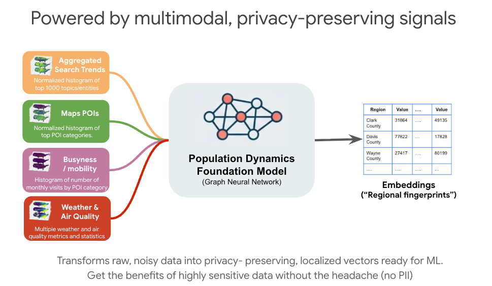
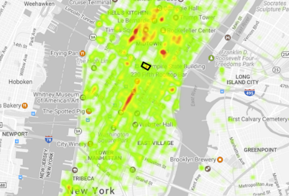

🗺️ Google Maps Platform × Population Dynamics Insights (PDI) — S2 Level 12 & Custom Trade-Area Explorer
Click any S2 Level 12 cell (`geo_id`) or Postal Code (`geo_name`) to set the Seed Trade Area, inspect its 330-D PDFM GNN vector, and highlight Sister Regions (`ML.DISTANCE` Cosine Similarity)


1. Evolutionary Fitness Frontier (`National Baseline` vs. `+Google Maps PDI`)
Solid Emerald = Geo-Temporal PDI Frontier (`684.90`) | Dashed Sky = National-Only AE Baseline (`522.33`)
2. PDI Sister-Region Hill S-Curve Shift & Operating Points
Targeting PDI Sister S2 Cells (`Sim ≥ 0.85`, `dims 0:127`) shifts the S-curve upward & lowers inflection κr,g
3. 8-Week × 5-RMN Geo-Temporal Flighting Plan ($k & Target S2 Hub)
Each pulse displays spend (`$k`) + target PDI Sister S2 cluster (`DFW`, `ORD`, `ATL`, `PHX`, `SEA`) & adaptive cooldown
4. Cumulative Incremental Sales Lift ($M) — 3-Tier Comparison
Emerald = AlphaEvolve + PDI (`+$21.05M`) | Sky = National AE (`+$16.72M`) | Gray = Naive Seed (`+$6.82M`)
5. PDI 330-D Vector Ablation — Marginal iROAS Lift by Embedding Block
Decomposing the `2.73x ➔ 6.69x ➔ 8.42x` iROAS gain across Search `[0:127]`, POIs `[128:255]`, Weather `[256:329]` & WorldPop
6. Custom Store Boundary Rollup: WorldPop 100m (`ST_REGIONSTATS`) vs. Area-Weighted
Incremental lift ($M) across the 5 Metro Trade Areas when weighting S2 slivers by population vs. raw land area